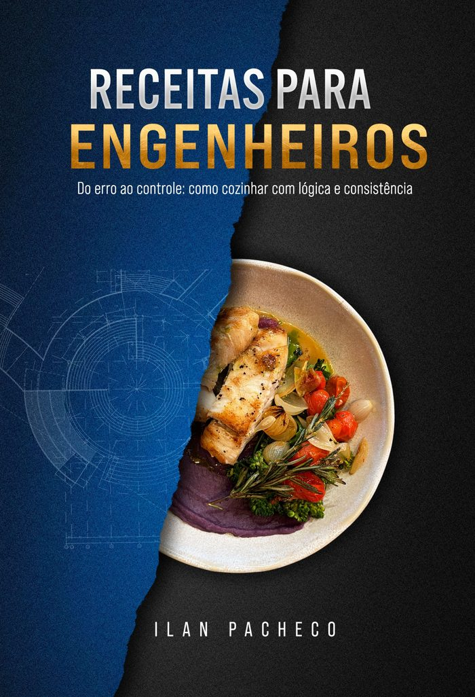

Sua empresa não tem um problema de esforço. Tem um problema de sistema.
Palestras, Workshop Executivo e Programa de Liderança construídos sobre um único framework: transformar decisão reativa em processo replicável. Sem linguagem de autoajuda. Sem promessa sem método.
Toda empresa reativa paga o mesmo preço — só não sabe o valor exato.
- Decisões que dependem da memória e do humor de quem está na sala naquele dia
- Processos que só funcionam enquanto o fundador está presente
- Lideranças que confundem urgência com estratégia
- Retrabalho tratado como normalidade operacional
- Decisões corretas tomadas tarde demais para gerar resultado
- Times que executam bem tarefas erradas
IPO — Clareza, Cadência, Critério, Consequência.
Quatro etapas, nesta ordem, usadas em toda palestra, workshop e no Programa de Liderança — para transformar decisão reativa em processo que sobrevive à ausência de quem o criou.
Clareza
Nomear o problema com precisão antes de agir sobre ele.
Cadência
Ritmo de execução sustentável — nem urgência artificial, nem lentidão disfarçada de prudência.
Critério
Regras de decisão explícitas, que sobrevivem à ausência de quem as criou.
Consequência
Acompanhamento do resultado real da decisão — não da intenção por trás dela.
Leve o framework IPO para dentro da sua empresa.
Palestra, workshop ou imersão — a proposta é ajustada ao seu contexto em até 24h.
Solicitar proposta agoraOito temas, quatro eixos, cinco formatos.
Cada palestra nomeia o problema com precisão antes de propor qualquer solução. O formato e a duração se ajustam ao evento — o rigor do conteúdo, não.
- Conteúdo adaptado ao momento da empresa — não uma apresentação genérica de prateleira
- Linguagem executiva, sem jargão de autoajuda corporativa
- Material de apoio e recomendações práticas de aplicação pós-evento
Do Erro ao Controle
Eixo Negócios e Estratégia — a palestra de referência para lideranças que precisam transformar reação em processo.
| Eixo | Tema | Público |
|---|---|---|
| Negócios e Estratégia | Do Erro ao Controle | Liderança · Operações |
| Negócios e Estratégia | Input, Processo, Output | Operações · PMO · Processos |
| Performance e Disciplina | A Prova é o Espelho | Alta performance · Kickoffs |
| Performance e Disciplina | Disciplina não é Rigidez | Liderança · Desenvolvimento executivo |
| Gastronomia Inteligente | A Cozinha como Sistema | Marca · Experiência |
| Gastronomia Inteligente | Engenharia de Sabor | Inovação · P&D · Wellness |
| Trajetória e Método | O Fio Condutor | Keynote · Autoridade |
| Trajetória e Método | Recomeços com Método | Transformação · Construção pessoal |
Formatos e investimento
| Formato | Duração | Investimento |
|---|---|---|
| Palestra Pocket | 30–40 min | A partir de R$ 4.000 |
| Palestra Standard | 45–60 min | A partir de R$ 7.000 |
| Keynote Premium | 60–90 min | A partir de R$ 15.000 |
| Imersão Corporativa | 3–4 horas | A partir de R$ 18.000 |
| Workshop Executivo | Dia completo | A partir de R$ 30.000 |
Valores de referência para proposta comercial; confirmados por escopo e data no orçamento formal.
Programa de Liderança. Seis meses. Estrutura, não motivação.
Um programa de imersão contínua para lideranças que já entenderam o problema e querem construir, com acompanhamento direto, o sistema que resolve.
- Aplicação prática do framework IPO na sua operação real, não em estudo de caso genérico
- Encontros regulares de acompanhamento ao longo de seis meses
- Acesso direto para ajuste de rota entre os encontros
Turma piloto: investimento individual entre R$ 3.000 e R$ 6.000. Formato consolidado (turma fechada, por empresa): R$ 60.000.
Garantir vaga na turma fundadoraAntes de solicitar a proposta
O conteúdo é genérico ou adaptado à minha empresa?
Toda palestra e workshop passa por uma etapa de alinhamento prévio para incorporar a realidade do seu time e do seu setor — o framework é fixo, os exemplos e a aplicação não são.
Como funciona a logística para eventos presenciais?
Formato presencial ou remoto, conforme a necessidade. Os detalhes de deslocamento, equipamento e tempo de montagem são acertados na proposta comercial.
O Programa de Liderança é só para donos de empresa?
Não. É para qualquer liderança — dono, diretor ou gestor — que tenha autonomia real para aplicar o framework na sua área.
Quanto tempo até receber a proposta?
Até 24 horas úteis após o envio do formulário de contato, com escopo, formato e investimento detalhados.

Receitas para Engenheiros
Um método para líderes que constroem empresas como quem constrói sistemas de engenharia: com entrada, processo e saída bem definidos — não com intuição isolada ou improviso disfarçado de agilidade. Lançamento em setembro de 2026.
Lançamento · Setembro 2026R$ 79,90 · Edição especial autografada: R$ 149,00
Seja avisado no lançamento
Deixe seu e-mail para receber a data exata, o acesso antecipado ao primeiro capítulo e as condições de pré-venda.
Nenhum spam. Apenas o essencial sobre o lançamento.
Sua empresa não precisa de mais esforço. Precisa de sistema.
Fale agora e receba uma proposta em até 24h.
Solicitar proposta agora